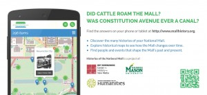

We selected a launch date for the beta version in early March 2014, in time for Washington, DC’s busiest tourist season. Preparation began months in advance. An active and on-going outreach plan was central to our efforts in attracting visitors to Histories. With the audiences identified, we created different ways to reach those audiences through print media, press releases, social media, and in-person outreach activities.
{kind=link}
After finalizing the web design and a logo for the site, the team designed and ordered brochures and stickers to have available for the site launch. The project directors worked closely with the web designer to compose text and a design that displayed the site’s URL and told visitors the site was mobile accessible.
{kind=link}

The flip side of the brochure contained basic information about the site indicating that it is a guide for exploring the Mall. We crafted text to hook visitors with interesting questions: “Did cattle roam the Mall?” “ Was Constitution Avenue ever a canal?” To make it clear to readers that the site was mobile-friendly, we included a screenshot image of a phone displaying the site’s map, and printed a Quick Response, or QR code. QR codes are readable by smartphone apps that allow a user to scan the code, which contains an encoded URL. Once scanned, the phone opens its web browser to the specific page linked in the QR code. We used a free QR Code generator to create the image we inserted into the brochure. Finally, to lend credibility to the site, we included the logos of RRCHNM, George Mason University (Mason), and the NEH.
Shortly after the site launch, we targeted a variety of local media with a press release specifically targeted for local audiences. We distributed this release to local news outlets, shared it with the George Mason University newsdesk, and posted it on RRCHNM’s website.
Working with the project directors, the outreach team identified locations near the Mall in Washington, DC where the team wanted to place brochures. The group identified DC libraries, archives, and museums where we sourced content, as well as tour group offices and National Park Service visitor centers. A project associate then contacted these sites by phone and email to ask them to display and offer the site’s brochures. After confirming acceptance from sites, project associates arranged for brochure deliveries, and visited other sites who had not responded to our inquiry. The following places accepted Histories brochures: Historical Society of Washington, DC; Martin Luther King Jr. Memorial Library (central public library for DC); City Segway Tours; Walter E. Washington Convention Center; White House Visitor Center (National Park Service); and Union Station’s tourist information desk. Some visitors centers only display materials produced by their organization, such as the US Capitol Visitor Center, and could not take our material. The Smithsonian Institution’s information desk in the Castle, on the other hand, agreed to keep brochures behind the desk, but could not place them out on their counters.
To acknowledge the libraries and archives whose sources we incorporated into the site, we created small tri-fold stands (PDF), saying “Find our material in Histories of the National Mall” with a short blurb describing the site, a QR code linking to the home page, and the logos of the site, RRCHNM, Mason, and the NEH.
There were some roadblocks for distributing promotional materials on the Mall and across DC. First, RRCHNM is located on Mason’s Fairfax, Virginia campus, 15 miles west of the Mall, and does not have a physical presence on or near the Mall. This made distributing brochures challenging. Second, while there are many organizations and companies serving DC tourists, we lacked a deep list of contacts working in the right places. Placing brochures at federal libraries, galleries, and museums, or at National Park Service sites proved complicated. Most institutions located on the Mall have strict policies limiting the display of brochures to only in-house materials which prevented them from accepting any material from us, even when we knew people who worked for those organizations. We tried to reach tour bus operators and riders, but since there is no central loading point for these tours other than Union Station–with multiple entrances and exits–distribution was a challenge. Repeated emails and calls to Destination DC, the local tourism bureau, also proved fruitless. One happy discovery was that the Walter E. Washington Convention Center was willing to take as many brochures as we could give them, and has continued to readily accept them for display at their information center near Mount Vernon Place.
Though RRCHNM is not located on the Mall, the Histories team works in the DC area making it easy for the team to coordinate with NEH program officers and the Congressional Affairs Office to distribute brochures to Congressional offices. Each Representative and Senator employs staffers who meet with constituents when they visit Washington, DC. Histories proved to be an appealing resource for them to distribute to constituents visiting during their DC vacations. And, for short-term staffers and interns new to the District, they began using the site to learn more about the history of their environs.
One year after the launch, the Project Manager contacted the sites that accepted brochures in the prior year. Most were very happy to receive additional flyers, but organizational changes at some of the sites meant that we were no longer able to reach the correct person with whom to discuss brochure distribution. We also reached out to local history centers in public libraries across the DC area, including Arlington and Fairfax Counties and Falls Church city in Virginia, and Prince George’s and Montgomery Counties in Maryland. Every library accepted brochures and some planned to disperse them among their branches.
We also expanded our local reach by contacting national and regional branches of the Boy and Girl Scouts in spring 2015. A project associate researched the current badge requirements for both scouting organizations and created a guide that explained how scouts at different levels might use the resources on Histories to achieve badges. The director wrote letters and attached a “badge connections” (PDF) addendum that invited scouting leaders to encourage use of the site by local councils and individual troops.
To reach history enthusiasts and the DC locals, we organized a few in-person events. The Project Manager connected with social media and technology managers at DC libraries, archives, and museums to coordinate small gatherings. In the DC area, we connected with the active Meetup community interested in history, cultural heritage, and technology.
Our first in-person event was in August 2014, when the outreach team hosted an on-site scavenger hunt in front of the Smithsonian Castle. We prepared a short scavenger hunt with mallhistory.org, but were unable to send participants on the Mall due to heavy rain. However, we were able to walk attendees through the site while standing on the Mall and they were impressed with the breadth of content they found while exploring the site. Later that evening, we presented the project, its content, and underlying design philosophy to approximately thirty attendees at the Digital Cultural Heritage DC monthly Meetup. Members of the crowd browsed the site on their phones while we circulated through the crowd discussing our processes and outreach strategies.
The outreach team attended other Meetups, such as Washington DC History & Culture.